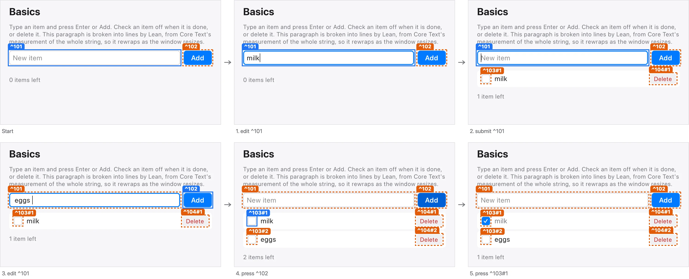
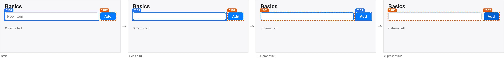
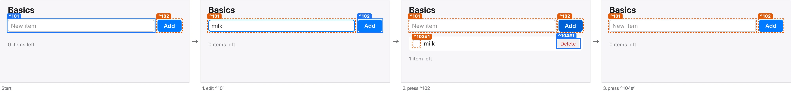

Basics window
The window: a heading, the New item field and Add, the list of items, and the count of items left. Generated from the claims in Examples.Basics; every status comes from evidence (see the Evidence page).
seen ✓
-
Basics window (^106) — proved ✓ · conformance not run · seen ✓
Type in the New item field, and press Enter.
The text appears in the field; Enter adds it like Add does.


-
Basics window (^106) — proved ✓ · conformance not run · seen ✓
Press Add.
The field's text, trimmed, is added at the end of the list and the field is cleared. Blank text changes nothing.


-
Basics window (^106) — proved ✓ · conformance not run · seen ✓
Press an item's checkbox.
The item is marked done, or not done again, and the count of items left follows.

-
Basics window (^106) — proved ✓ · conformance not run · seen ✓
Press an item's delete button.
The item is gone, and its checkbox and delete button with it.


Type milk and press Enter, type eggs and press Add, then check milk. Two items, milk done, and one item left. — proved ✓ · conformance not run · seen ✓

Type spaces, then press Enter and Add. The list stays empty. — proved ✓ · conformance not run · seen ✓

Type milk, press Add, then press milk's delete button. The list is empty again, and nothing is left. — proved ✓ · conformance not run · seen ✓
